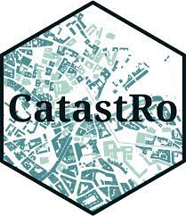

Catastro de Castillo de Teayo, Ver.

El catastro sirve como base de control y gestion administrativa
estatal de todo tipo de bienes contenidos dentro de un pais o region.
Estos serian los denominados bienes inmuebles rusticos, urbanos o tambien considerados
como caracteristicas especiales.